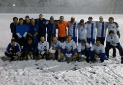
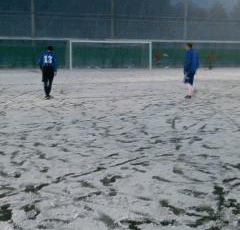
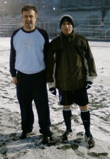

|
Hanno Saturday 9th Feb,
The Albion Old Boys became The Alpine Cold Boys on a snowy winter evening in darkest Saitama, but neither a raging blizzard nor a determined Jets team could prevent the Superannuated Snowmen from taking the three points with another stylish performance.
It was already snowing hard as the teams set out for their two-day - sorry, two-hour - trek out to Hanno, and with no game played on the astroturf pitch in the afternoon there was plenty of time for the snow to settle. When the floodlights went on at 5pm they revealed an arctic expense of white, with the falling flurries getting thicker all the time. But having come this far we had to give it a go, so even though the pitch line markings were more deeply buried than a baby mammoth in the Siberian permafrost we plonked down the goalposts and kicked off.
Despite the difficult conditions, Albion settled quickly into their passing game, and took an early lead when Kuni Katase latched on to a through ball that sprung the high Jets back line. Cool finish, 1-0. Kuni was also involved in the next two goals, playing the one-two with Mick O'Hagan that put Mick in to fire home Albion's second, then taking Naoki Ogasawara's pass in stride to finish off another well-worked move.
3-0 at the break to the blue-testicled boys in blue. Half-time team talk was "Sod this standing around, let's get it over with", so within a couple of minutes we were at it again. The snow got deeper and deeper, and a few chances went begging before the fourth goal finally came. Morgan Farrell, who'd been terrorizing the Jets defence all game, once again slalomed through their back line, and this time got the finish as well.
At this point skipper George "Pele" Clarkson made the most noble gesture of self-sacrifice in arctic conditions since Captain Oates walked out of the Scott expedition tent to a certain death in the snow, Captain Clarkson offering to go in goal so that Hitoshi could be unleashed on the Jets for the last twenty minutes.
Predictably enough it only took George two minutes to freeze solid on the goal line, though he wasn't the only stalagmite in the Albion defence as the Jets finally found a way through to score (the fact that our snow-blind linesman had his flag frozen to his hip didn't help, either). But any thoughts the Jets might have had about mounting an unlikely comeback were quickly quashed with another flurry of goals. Morgan crashed a shot against the crossbar, and O'Hagan buried the rebound with a murderous drive from one metre out. The canny Canadian, well used to these conditions playing summer soccer in Ottawa, then claimed his hat trick with a close-range header before passing out with heatstroke, though he was fine once he got out of his bearskin body stocking and shed the outer three of his six layers of thermal underwear. In fact he had a hand in setting up a couple more goals, as Hitoshi celebrated his release from goalkeeping duties by sliding in for two late strikes to rack up a scoreline that really doesn't reflect what a well-contested game this was. The Jets played plenty of good football but rarely found a way though to goal as the Albion defended strongly, controlled the midfield with good tackling and neat passing, and always looked dangerous going forward. The Old Boys are now in the process of drafting a proposal to the IOC that snow football be added as a medal event for the next Senior Winter Olympics.
Report by Terry Cooney
|